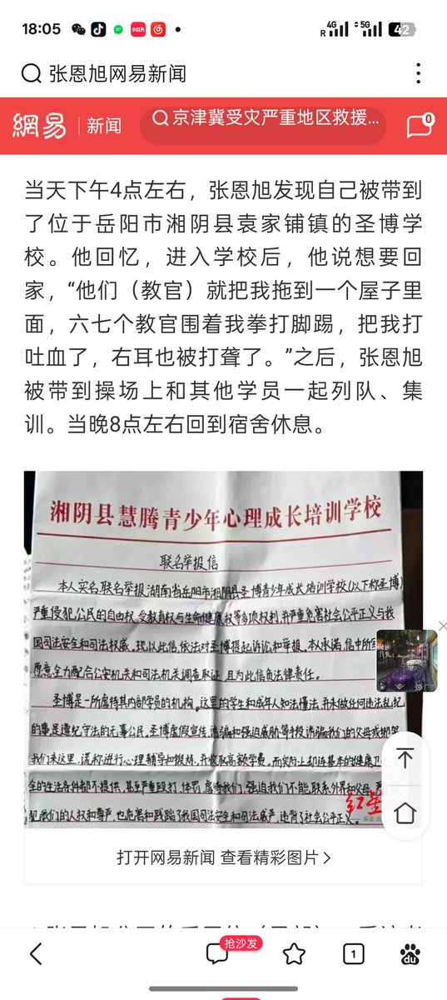

拱北靠北
@psyofsouthwest
@LwrDHYyuxR22499 @yaming00742313 一个人口负增长的国家，还有如此多的青少年迫害机构，实在是荒谬至极

牧鸢
@LwrDHYyuxR22499
时光荏苒，到了2024年7月13日。
网名叫 @yaming00742313 的人，被送进湖南英高特旗下的圣博矫正机构，在里面遭受殴打虐待性侵
我们把他救出来后，他的求救信在互联网上病毒式传播
可这家机构依旧像当年一样傲慢。
他们甩给我一笔钱轻飘飘说
“拿着花吧这事算了别追究我们开了十几年了小心我叫警察弄你” https://t.co/DHtFaOaMx2 https://t.co/nWflg8vUc3